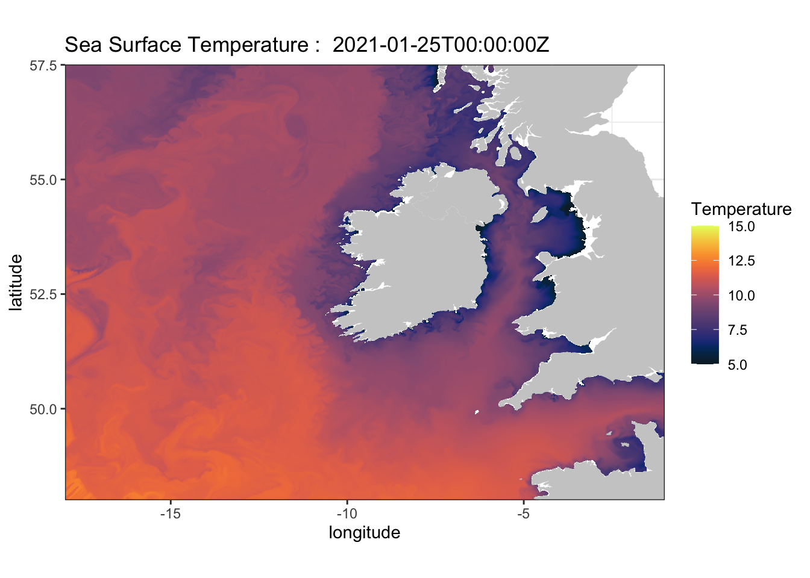

R for Geospatial Sciences
2021-03-03
1 R for Geospatial Sciences

1.1 Welcome
This textbook provides R programming tutorials for geospatial sciences. These were built for University of Delaware Department of Geography and Spatial Sciences 473/673 course. This is a complete manual covering ~ 4 credits of material designed to take a student with little to no R coding experience to proficient in R for geospatial sciences. Data ingest, quality control, reprojection, publication quality visualization, and machine learning techniques are all covered in this book with a focus on spatial datasets.
The objective of the Spring installment of GEOG 473/673 is to expand on the topics covered in the Fall version of GEOG 473/673 (Intro to R for Geospatial Sciences, sections 2-9 of this book). The course will be split into 2 phases. The first phase is a 2-credit course focused on using advanced tools within the R programming language (sections 10-16 of this book). The goal of this phase is for students to gain practical experience with challenging R topics that can be used for generating publication quality material. The second phase is a 1-credit course focused on introducing machine learning practices and implementing these via R (sections 17-19 of this book). Machine Learning is a growing practice in data science and can be useful for geospatial sciences. Students will apply R programming knowledge and gain confidence in machine learning techniques and application with R. This challenging, fast-paced course is intended for students that already have programming experience with R or Python. If you’re coming into this course without any R experience, you are encouraged to visit sections 2-9 of this book for introductory guidance with R.
1.2 Course Github
1.3 Syllabus
https://github.com/jsimkins2/geog473-673/blob/master/documents/spring_geog473_673_syllabus.pdf
1.4 Phase 1
Advanced R for Geospatial Sciences - 02/15/2021 - 04/16/2021 – 2cr
| Week | Topic |
|---|---|
| 1 | Customizing Plots |
| 2 | Basic Statistics |
| 3 | Plotting with ggplot2 |
| 4 | Spatial Plots with ggplot2 |
| 5 | Shapefiles |
| 6 | Remote Data Extraction |
| 7 | Functions and Code Presentation |
| 8 | Project |
| 9 | Project |
1.5 Phase 2
Machine Learning with R – 04/19/2021 to 05/18/2021 – 1cr
| Week | Topic |
|---|---|
| 1 | Machine Learning Intro |
| 2 | Time Series Forecasting |
| 3 | Time Series Forecasting |
| 4 | Random Forest Modeling |
| 5 | Random Forest Modeling |